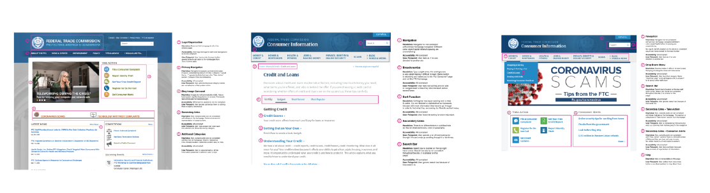
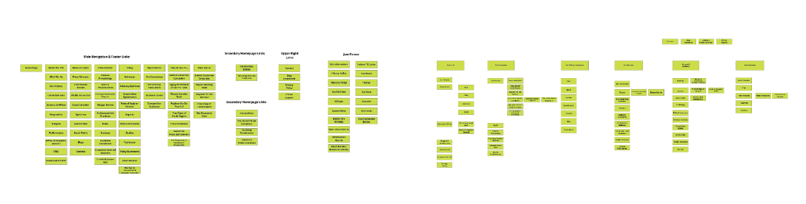
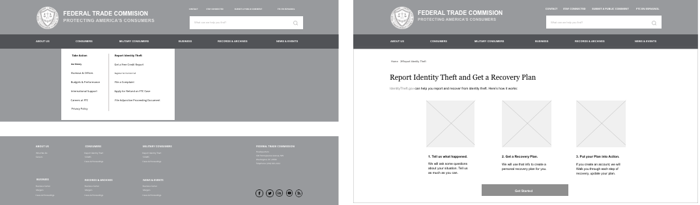
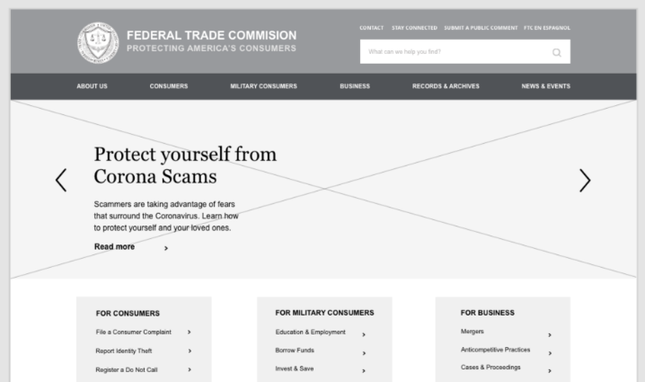
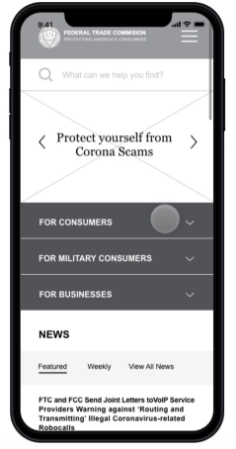
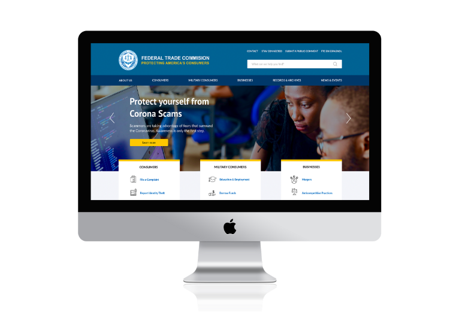
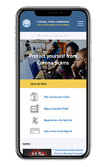

Federal Trade Commission’s main goals are to protect consumers and to enforce fair business practices. The current FTC website does not effectively showcase services and information to its target users. It also has an outdated design and needs a Brand refresh to better appeal to a wider audience.
First I gathered data on current user journeys to map everything out. The four typical user paths that I focused on were:
FTC supports criminal investigations and ultimate prosecution by serving as an intermediary between consumer and law enforcement, as well as providing helpful tools.
Consumers want to be more aware on how to protect themselves from credit card fraud. Fortunately, FTC provides tips & advice on the topic of money & credit.
Consumers are able to look up various cases in the FTC database, regardless if it is personally related or non-related to them.
FTC holds several hearing sessions a year and consumers can attend sessions to gain a deeper understanding of consumer laws.
I analyzed user journey pages for the typical paths above. I noted different UI elements, looked for user pain points, as well as tested for accessibility. The primary and secondary navigation changed throughout various pages. FTC Logo served as a home link only in some pages. Overall, there was a lack of consistency and visual hierarchy. The navigation presented an opportunity for improvement.
The next step was usability testing of the Navigation portion of the website. Users were given specific tasks to complete and encouraged to “think aloud” while using the FTC website. Usability testing helped me measure user success rate by noting the time spent completing a task, and the amount of clicks it took to achieve the desired result. I also gained valuable insight from users’ frustrations:
The current FTC website does not effectively showcase services and information to its target users. It also has an outdated design and needs a Brand refresh to better appeal to a wider audience. With a restructured navigation, clearer user paths and a partial rebrand, the FTC website users will be able to achieve their goals promptly and efficiently.
My partner and I used card sorting to help us evaluate information architecture of FTC’s website. We organized topics into categories and sorted them by target market, content, and relevance. Card sorting helped us create a structure for an updated sitemap, which was more intuitive and organized.
New structure's layout has a large, quality hero image as well as a short summary of the featured article. The website is divided into 3 target audiences and has quick links to the most important actions users engage in. The use of white space and a larger type reduces the text heavy feel and allows for a better reading experience. The mobile layout transcends similar elements as the desktop, while efficiently utilizing the space for the most important links.
During usability testing users were able to identify the organization, what it does and who its target audience is. They felt that the brand was trustworthy and the design was clean, intuitive and purposeful. Users had no difficulties navigating and did not seem to pause at any step of the navigation.
https://invis.io/35WQGF74ZC9
https://invis.io/HNWQGH5WVYF#/412350116_Mobile-Homepage
 
https://invis.io/35WQGF74ZC9
https://invis.io/HNWQGH5WVYF#/412350116_Mobile-Homepage
There is quite a lot of work to do moving forward, since this was only the first sprint of a major website overhaul.